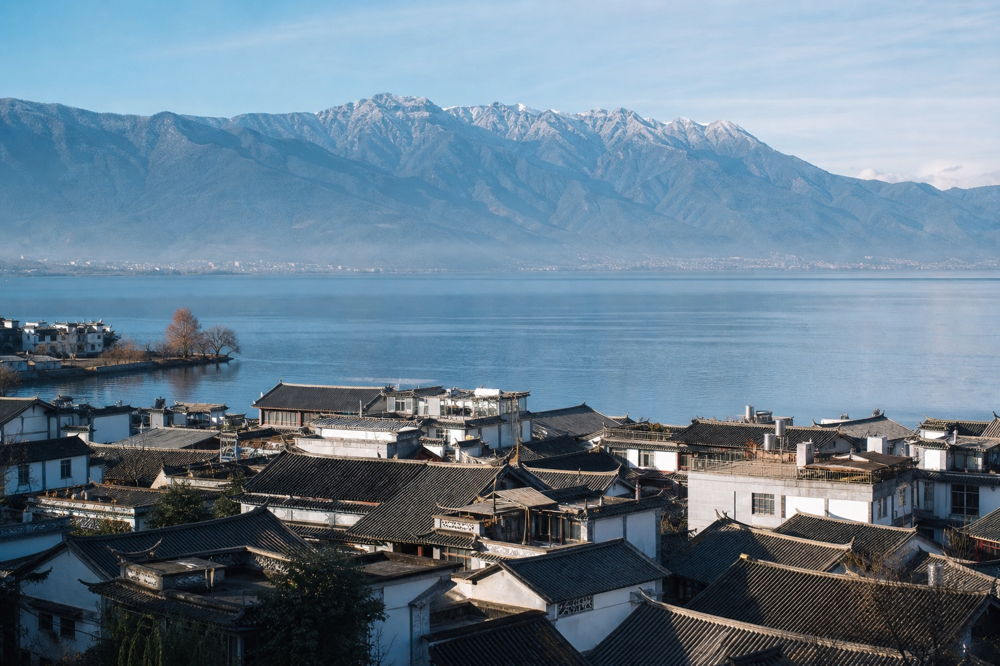
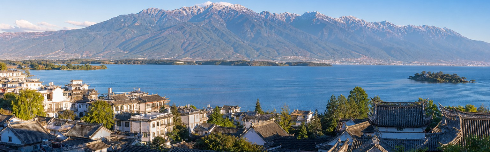
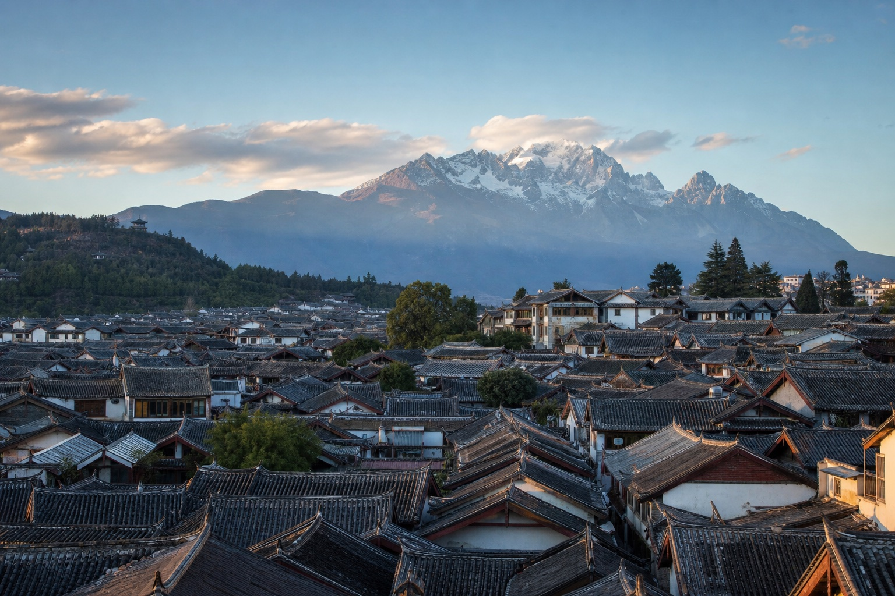
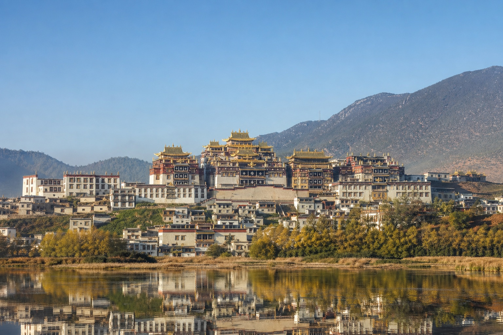
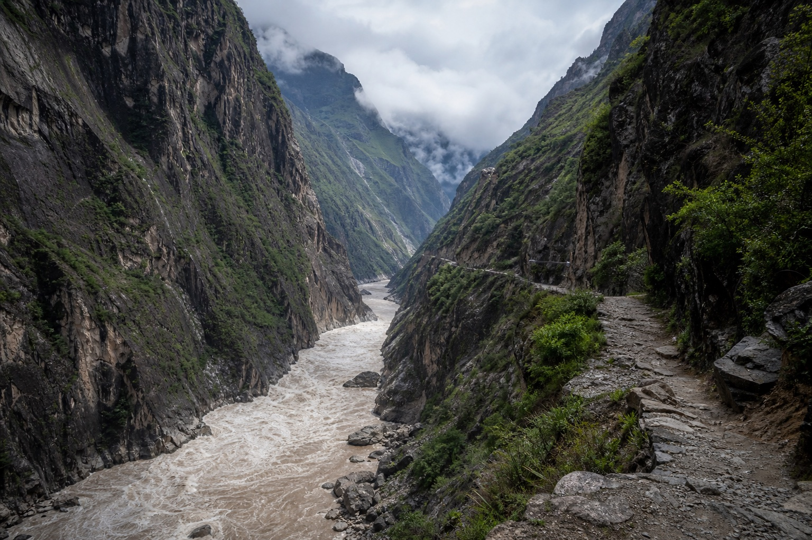
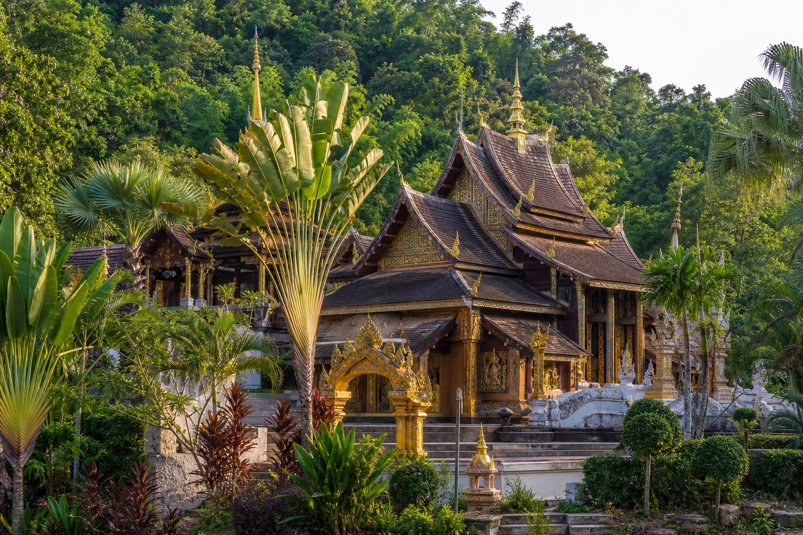
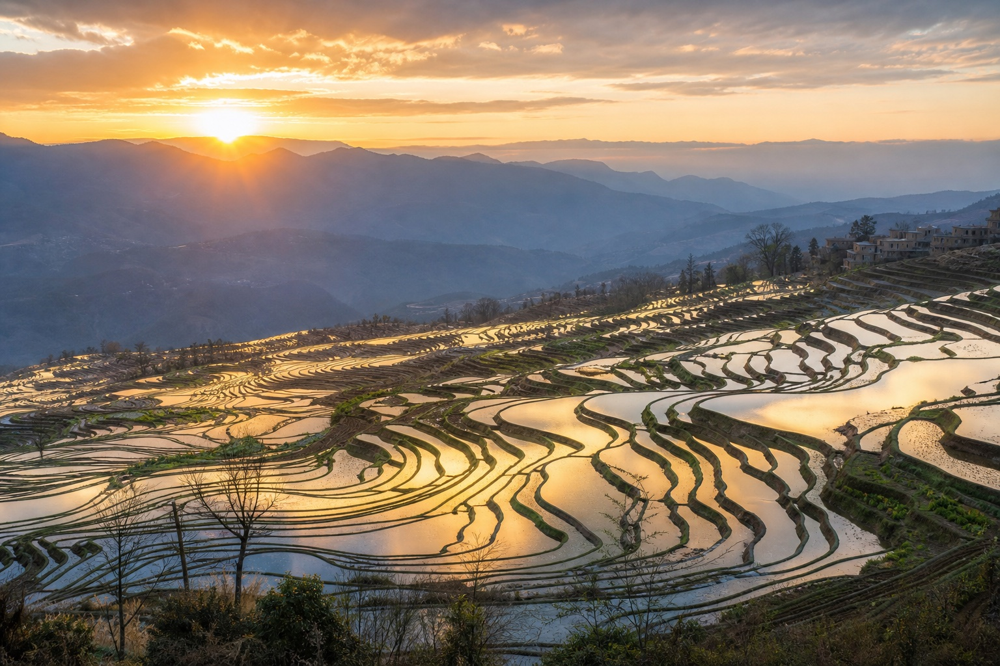
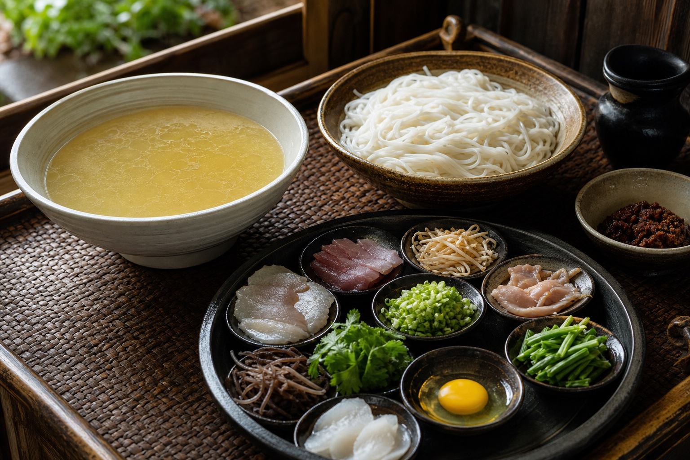

01
Dali
Erhai Lake, Bai culture, old towns, and Cangshan views.

One province, many landscapes
At China’s southwestern crossroads, Yunnan stretches from snow mountains and deep river gorges to highland lakes, limestone forests, rice terraces, and tropical rainforest. Twenty-six long-established ethnic groups add languages, architecture, food, and traditions that can change dramatically from one valley to the next.
Yunnan is not a single-city break; it is a route. Dali, Lijiang, Shangri-La, Xishuangbanna, and Yuanyang each offer a different version of the province, so the most rewarding journey chooses one coherent direction instead of trying to collect every highlight in one rushed loop.
01
Start here

Erhai Lake, Bai culture, old towns, and Cangshan views.

Historic lanes beneath Jade Dragon Snow Mountain.

Highland scenery, Tibetan culture, and Songzanlin Monastery.

A dramatic canyon route between Lijiang and Shangri-La.

Tropical rainforest and Dai cultural landscapes.

Water-filled rice terraces shaped across the mountains.
02
Eat like a local

03
Recommended time
Seven to ten days suit a classic northwest route; longer trips can add tropical or terrace regions without forcing the transfers.
Get ItineraryConnect Kunming, Dali, and Lijiang with enough time for lakes, old towns, and one mountain experience.
Extend through Tiger Leaping Gorge to Shangri-La while keeping altitude and transport days realistic.
Add Xishuangbanna or Yuanyang as a separate southern chapter rather than a rushed detour.
Your Yunnan, made clearer
Tell us your season, interests, and tolerance for long transfers. We’ll choose the Yunnan route that fits rather than forcing the whole province into one trip.
Start With Your Yunnan Trip